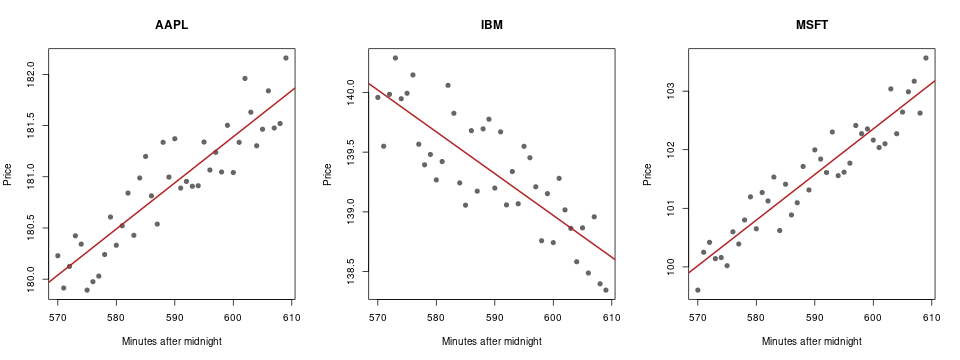

R from q with embedR¶
embedR loads R into the PeachQ process, so a q table becomes an R data frame without a file or a socket in between. You'll build embedR, summarise and model a q table in R, call R functions with q arguments, and save this chart from the same session:

Generated by the recipe below: 120 example trades built in q, fitted with R's
lm and drawn with R base graphics.
Run it¶
Use Linux x86-64 with glibc, Bash, curl, tar, GCC and make, and R built
as a shared library with its development headers. On Debian and Ubuntu the
r-base and r-base-dev packages provide both. This recipe does not install R
itself or any R packages. Start in a fresh directory.
Requires the Linux glibc build
This integration loads a shared library. Use PeachQ's Linux glibc build, available as the DuckDB/glibc download. The standard static Linux build cannot load shared libraries.
embedR has no prebuilt Linux archive for its current release, so the second
curl fetches the v1.5.1 source and make builds it against your R. No changes
to embedR's source or its rinit.q loader are needed.
set -euo pipefail
mkdir peachq-r-demo && cd peachq-r-demo
mkdir peachq
curl -fL https://peachq.org/download/peachq-linux-x64-duckdb.tar.gz | tar -xz -C peachq
curl -fL https://github.com/KxSystems/embedr/archive/refs/tags/v1.5.1.tar.gz | tar -xz
(cd embedR-1.5.1 && make)
mkdir -p l64
cp embedR-1.5.1/l64/embedr.so l64/
cp embedR-1.5.1/rinit.q .
export QHOME="$PWD" R_HOME="$(R RHOME)"
curl -fLO https://peachq.org/docs/interfaces/examples/embedr-demo.q
./peachq/q embedr-demo.q
make compiles embedr.c into embedR-1.5.1/l64/embedr.so, linked against
libR.so. The copy into l64 under QHOME is where rinit.q finds the library
when it loads it with `embedr 2:. R_HOME tells the embedded R where its
own files are. The script prints each result below and saves trades.png.
If PeachQ reports that libR.so cannot be found, add R's library directory to
the search path with export LD_LIBRARY_PATH="$(R RHOME)/lib".
Open an R session¶
Keep the same shell, so QHOME and R_HOME stay set, and start PeachQ:
./peachq/q
Load the bridge, then start R:
rinit.q defines Ropen, Rset, Rget, Rcmd and Rfunc from the shared
library. Ropen starts one embedded R interpreter in the q process; its
argument 1 would start R in verbose mode, and 0 starts it quietly. The other
functions call Ropen themselves if R is not yet running.
There is no function to close R. R stays loaded until the q process exits, and
embedded R cannot be started a second time in the same process. To start
again with an empty R workspace, run Rcmd"rm(list = ls())".
Send q data to R¶
Build 120 trades: three symbols, one trade per symbol per minute from 09:30, each
price a base level plus a steady drift and some noise. \S 42 fixes the random
seed, so you get the same prices every run:
q)\S 42
q)base:`AAPL`IBM`MSFT!180 140 100f
q)drift:`AAPL`IBM`MSFT!0.05 -0.03 0.08
q)trades:([]time:raze 3#'09:30+til 40;sym:120#key base)
q)trades:update price:base[sym]+(drift[sym]*`int$time-09:30)+-0.5+120?1f from trades
q)3#trades
| time | sym | price |
| minute | symbol | float |
|--------|--------|----------|
| 09:30 | AAPL | 180.2291 |
| 09:30 | IBM | 139.9579 |
| 09:30 | MSFT | 99.60382 |
Rset copies a q value into an R variable. A table becomes a data frame, and
R's print writes to the q console:
q)Rset["trades";trades]
q)Rget"class(trades)"
"data.frame"
q)Rcmd"print(head(trades, 3))"
time sym price
1 570 AAPL 180.22909
2 570 IBM 139.95786
3 570 MSFT 99.60382
The time column arrived as 570: a q minute becomes an R integer counting
minutes after midnight. Symbols became R strings. Every q type has a fixed R
equivalent:
| q type | R class | Notes |
|---|---|---|
| boolean | logical |
|
| byte | raw |
|
| short, int | integer |
Nulls become NA |
| long | integer64 |
Load the R package bit64 to compute with it |
| real, float | numeric |
Nulls become NaN |
| char vector | character of length 1 |
One string; a char column of a table gives one string per row |
| symbol, enumeration | character |
|
| guid | character |
An atom gives one 36-character string; a vector gives a list of them |
| timestamp | nanotime |
Load the R package nanotime to compute with it |
| month | integer |
Months since 2000.01 |
| date | Date |
|
| datetime | POSIXct |
|
| timespan | numeric |
Seconds |
| minute, second, time | integer |
Minutes, seconds or milliseconds after midnight |
| table, keyed table | data.frame |
Key columns become ordinary columns |
| dictionary | named vector or list | |
| general list | list |
Use int or float columns for values you want to compute with in base R. A q
long such as til 5 arrives as integer64, which base R functions do not
treat as numbers without bit64.
Run R on it¶
Rcmd runs R code and returns nothing; Rget runs R code and returns the
result to q. Average the price for each symbol with R's aggregate, then ask
q the same question:
q)Rcmd"stats <- aggregate(price ~ sym, trades, mean)"
q)Rget"stats"
| sym | price |
| | float |
|--------|----------|
| "AAPL" | 180.9181 |
| "IBM" | 139.3373 |
| "MSFT" | 101.5387 |
q)select avg price by sym from trades
| sym | price |
| symbol | float |
|========|----------|
| AAPL | 180.9181 |
| IBM | 139.3373 |
| MSFT | 101.5387 |
The averages agree. The R data frame came back as a q table, but its sym
column is a list of strings, because R character vectors return as strings. An
R factor returns as a q symbol vector, so wrap a text column in factor() when
you want symbols back.
Now fit a straight line of price against time for each symbol, and collect the slope and R² of each fit in a data frame:
q)Rcmd"fits <- lapply(split(trades, trades$sym), function(d) lm(price ~ time, d))"
q)Rcmd"coefs <- data.frame(sym = factor(names(fits)), slope = sapply(fits, function(f) coef(f)[[2]]), r2 = sapply(fits, function(f) summary(f)$r.squared))"
q)Rget"coefs"
| sym | slope | r2 |
| symbol | float | float |
|--------|-------------|-----------|
| AAPL | 0.04503951 | 0.8129359 |
| IBM | -0.03497329 | 0.6836398 |
| MSFT | 0.077853 | 0.892347 |
The fitted slopes, in price per minute, recover the drifts of 0.05, -0.03 and
0.08 used to build the data, and R² shows how much of each price series the line
explains. fits stays in the R session, so later R code can use the models.
Each Rcmd or Rget string is parsed as a single R expression. In
Rcmd"a <- 1; b <- 2" only a is assigned, so send one expression per call,
or wrap several in braces.
Call R functions from q¶
Rfunc calls an R function by name with q values as its arguments. A general
list supplies one argument per item. Correlate the AAPL and MSFT price series:
q)Rfunc["cor";(exec price from trades where sym=`AAPL;exec price from trades where sym=`MSFT)]
0.8783848
Functions you define in R work the same way:
q)Rcmd"zscore <- function(x) (x - mean(x)) / sd(x)"
q)Rfunc["zscore";enlist 100 101 102 103f]
-1.161895 -0.3872983 0.3872983 1.161895
Use enlist to pass one vector as a single argument. Rfunc spreads a simple
vector into one argument per element, so Rfunc["max";100 103 101f] calls
max(100, 103, 101) and returns 103f. An atom, dictionary or table is always
a single argument.
Rget and Rfunc results come back as these q types:
| R value | q value |
|---|---|
logical |
boolean; NA becomes 0b |
integer |
int |
numeric |
float; NA and NaN become 0n, Inf becomes 0w |
character |
string if it has one element, otherwise a list of strings |
factor |
symbol vector |
integer64 |
long |
raw |
byte |
Date |
date |
POSIXct, POSIXlt |
datetime |
data.frame |
table |
| list with names | dictionary |
| list without names | general list |
| matrix | list of rows |
NULL |
() |
A vector of length 1 returns as an atom. A numeric or character vector that
carries attributes, such as the names on coef(fit), returns as a two-item list
of the attributes and the values. Use unname() in R to get the plain vector:
Make the chart¶
Define an R function that draws one symbol's prices and its fitted line, open a PNG file as R's graphics device, and draw three panels side by side:
q)Rcmd"plot_sym <- function(s) { d <- trades[trades$sym == s, ]; plot(d$time, d$price, main = s, xlab = 'Minutes after midnight', ylab = 'Price', pch = 19, col = 'grey40'); abline(fits[[s]], col = 'firebrick', lwd = 2) }"
q)Rcmd"png('trades.png', width = 960, height = 360, pointsize = 15)"
q)Rcmd"par(mfrow = c(1, 3))"
q)Rfunc["plot_sym"] each `AAPL`IBM`MSFT;
q)Roff[];
q)Rget"file.exists('trades.png')"
1b
Rfunc["plot_sym"] is an ordinary q projection, so each calls the R function
once per symbol. Roff[] from rinit.q runs R's dev.off(), which closes the
device and writes the file. Open trades.png in the current directory to see
the chart at the top of this article. pdf() and svg() work the same way. The
chart uses only base R, so no packages are needed.
Download the complete q script; it is the same session as a script and is fetched by the setup above.
R is called through KX embedR, licensed under Apache-2.0. Its user guide describes the five functions and interactive plotting.
Limitations¶
As of 2026-10-08, with PeachQ v0.88 and embedR 1.5.1 built against R 4.1.2,
embedR's own test script rtest.q runs to completion and 285 of its 286
checks pass. The failing check compares R's serialize() output with bytes
recorded under a newer R; the bytes include the R version, so it fails on R
4.1.2. A round trip of every q type through Rset, Rget and Rfunc gave the
mappings in the tables above.
Several q types do not come back as they went in. Short and real return as int and float; month, minute, second and time return as ints; guids and symbols return as strings; timespans return as float seconds, and a null timespan becomes a large negative number instead of a null. Dictionaries of longs lose their keys.
Because a length-1 R vector returns as an atom, a one-row data frame returns
as a malformed table whose columns are atoms. PeachQ v0.88 does not reject it,
and its count is wrong; displaying it can exhaust memory. Return one-row
results as a dictionary instead, for example Rget"as.list(stats[1, ])".
What to keep in mind¶
You have built embedR against your R, sent a q table to R, brought R statistics and model results back as q tables, called R functions with q arguments and saved an R chart.
- Shared libraries: use the glibc PeachQ package. Build
embedr.soagainst the R installation you run with, and setR_HOMEto match. - One R per q process:
Ropenstarts R once; it cannot be closed or restarted, and its workspace persists for the life of the q process. - Main thread only: embedR is written to be called from the main q thread.
Keep R calls out of
peachand secondary threads. - One expression per call:
RcmdandRgetevaluate only the first R expression in their string. - Types: send int or float rather than long for base R arithmetic, and use
factor()orunname()in R to get symbols or plain vectors back. - Errors: an R error becomes a q error, which you can trap with
@or.:'eval error: ...fromRcmdandRget, and'run error: ...fromRfunc, which also prints R's message to the console.